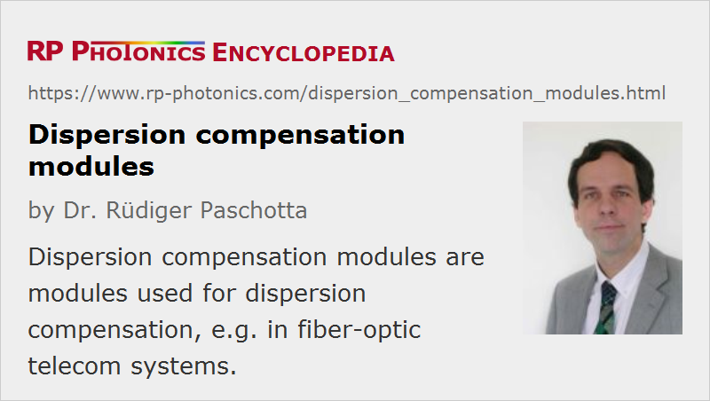

Dispersion Compensation Modules
Acronym: DCM
Definition: modules used for dispersion compensation
German: Dispersionskompensations-Module
Categories: photonic devices, lightwave communications, light pulses
How to cite the article; suggest additional literature
Author: Dr. Rüdiger Paschotta
In optical fiber communications, dispersion compensation modules (DCM) (also called dispersion compensation units, DCU) can be used for compensating the chromatic dispersion of, e.g., a long span of transmission fiber. Typically, such a module provides a fixed amount of dispersion (e.g. normal dispersion in the 1.6-μm spectral region), although tunable dispersion modules are also available. A module can easily be inserted into a fiber-optic link because it has fiber connectors for the input and output. The insertion losses may be compensated with a fiber amplifier, e.g. an erbium-doped fiber amplifier in a 1.5-μm telecom system. A dispersion-compensating module is often placed between two fiber amplifiers.
Dispersion compensation modules can be based on different technologies:
- A simple and frequently used method employs a long piece of fiber, e.g. a dispersion-shifted fiber, wound up on a spool with a diameter of e.g. 100–200 mm. The fiber used can be optimized to provide dispersion for the compensation of e.g. a 100-km span of transmission fiber, while introducing an optical loss of only a few decibels.
- A more compact approach, also presenting lower insertion loss, is based on a chirped fiber Bragg grating. A large amount of dispersion can be compensated with relatively long fiber gratings (possibly tens of centimeters in length). By varying the device temperature (with built-in temperature gradients), the dispersion can be tuned.
- For wavelength division multiplexing systems, virtually imaged phased arrays are sometimes used.
Various properties of dispersion compensation modules can be important:
- A central aspect is of course the amount of chromatic dispersion provided, which depends on the length of transmission fiber to be compensated, and on the type of transmission fiber. For example, dispersion-shifted transmission fibers usually require much less dispersion compensation.
- The dispersion slope (higher-order dispersion) can strongly limit the usable bandwidth, which is important particularly in the case of wavelength division multiplexing. Depending on the type of transmission fiber, different relative dispersion slopes are required. High relative dispersion slopes tend to make the fiber design more difficult.
- In some cases, tunable dispersion is desirable.
- Optical insertion losses result from absorption and scattering in the fiber itself, but also from splice and connector losses. Such losses should be low, since they require a high amplifier gain and introduce higher excess noise.
- In some cases, optical nonlinearity can be relevant. This is minimized e.g. by using strongly dispersive fiber, where a shorter length is sufficient.
- Compactness can be an important practical aspect. Tight winding of the compensating fiber can be a solution, but is limited by bend losses.
For very high single-channel data rates, compensation of polarization mode dispersion can also be required. This is substantially more complicated, since it is necessary for that purpose to monitor the state of the signal and correct the time delays accordingly.
Suppliers
The RP Photonics Buyer's Guide contains 21 suppliers for dispersion compensation modules. Among them:
Questions and Comments from Users
Here you can submit questions and comments. As far as they get accepted by the author, they will appear above this paragraph together with the author’s answer. The author will decide on acceptance based on certain criteria. Essentially, the issue must be of sufficiently broad interest.
Please do not enter personal data here; we would otherwise delete it soon. (See also our privacy declaration.) If you wish to receive personal feedback or consultancy from the author, please contact him e.g. via e-mail.
By submitting the information, you give your consent to the potential publication of your inputs on our website according to our rules. (If you later retract your consent, we will delete those inputs.) As your inputs are first reviewed by the author, they may be published with some delay.
See also: dispersion compensation, optical fiber communications, optical data transmission
and other articles in the categories photonic devices, lightwave communications, light pulses
|  |
If you like this page, please share the link with your friends and colleagues, e.g. via social media:
These sharing buttons are implemented in a privacy-friendly way!